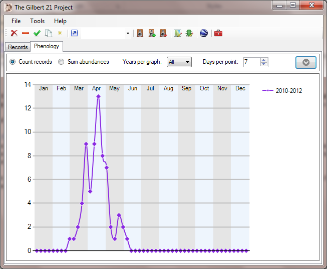
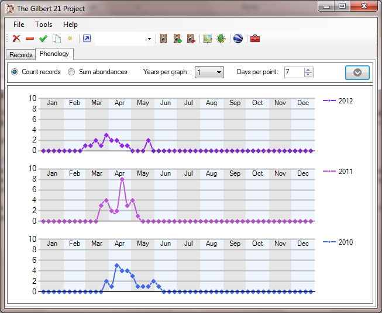
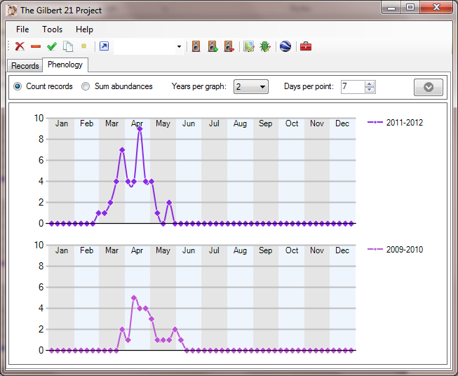
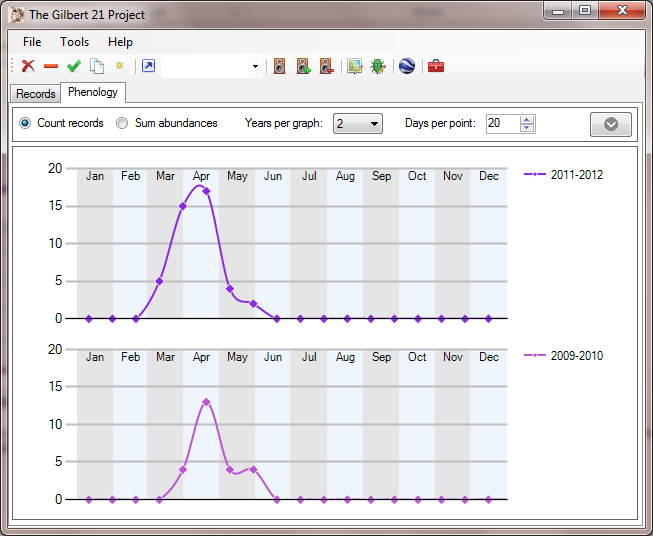
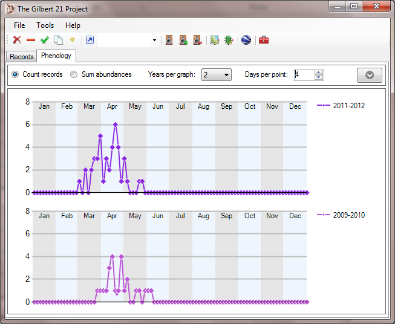
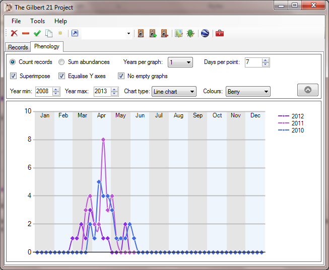
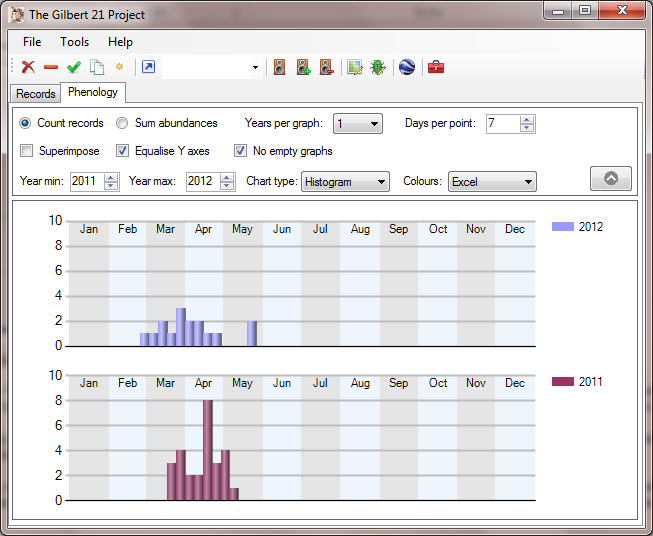
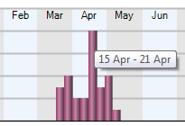
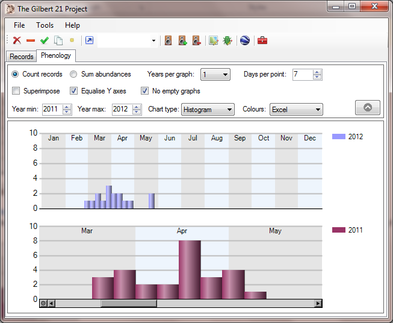

Gilbert 21 - phenology graphs
Any records displayed in the main records form can be displayed in phenology graphs. Just click on the Phenology tab in Gilbert 21's main form and a graph showing the records according to the time of year they were made will be displayed.

The way that the data are grouped and displayed can be modified by using a number of controls at the top of the phenology tab. By default, only a small number of these controls are displayed, but by clicking the button on the right you can display more. This button is a toggle, so clicking it when the controls are displayed will hide them again.
The function of all controls is described below.
Modifying the phenology display
The Count records / Sum abundances radio controls allow you to indicate whether or not Gilbert 21 will use actual abundances to scale the Y axis or simply record counts. Whether or not this makes much difference to the appearance of the graph depends on how data were collected. For example at a moth trap, where abundance data are commonly collected, graphs showing record counts can look significantly different from those which sum abundances for each record.
The Years per graph control allows you to specify the number of years that are grouped together in each graph. The default is for all years to be grouped together in a single series and graph (as shown above). The images below show the effect of changing the value of this to 1 year and 2 years.


The Days per point control lets you change the size class (in days) used to group the data. The default is seven days, but this can be changed up or down. The affect of doing this is shown in the illustrations below.


The Superimpose checkbox allows you to superimpose more than one series in a single graph. For example in the graph below, the Years per graph value is set to one year, but three different series this produces are grouped on a single graph.

The Equalise Y axes checkbox (ticked by default) can be used to ensure that when more than one series is displayed in different graphs, their Y axes are all scaled similarly to aid comparisons between the graphs. If this box is un-ticked, graphs may be scaled differently to suit the data series displayed in each.
The No empty graphs checkbox (ticked by default) can be used to remove graphs from the display for year ranges where no records were present. If this box is un-ticked, then graphs will be displayed even for series with no records.
The Year min and Year max controls can be used to filter the years that are used in the graphing. The Chart type control allows you to switch between the line graph (as shown in all the examples above) and a histogram (as shown below). The Colours control allows you to change the colour scheme used for the graphs.

Looking more closely
If you move the mouse pointer over any point in a line graph (or bar in a histogram), a tool-tip style box will pop up displaying the class interval (dates) corresponding to that point.

You can drag a box over any part of a graph to zoom the X axis as shown below.

Note the scroll bar which has appeared below the graph on which we've zoomed into. When you've zoomed in like this, you can restore the previous view by clicking on the small circle at the extreme left of the scroll bar.
Created with the Personal Edition of HelpNDoc: Write eBooks for the Kindle